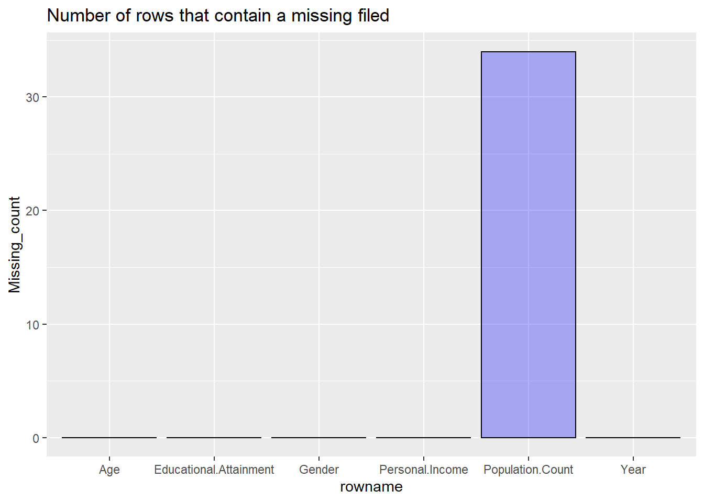
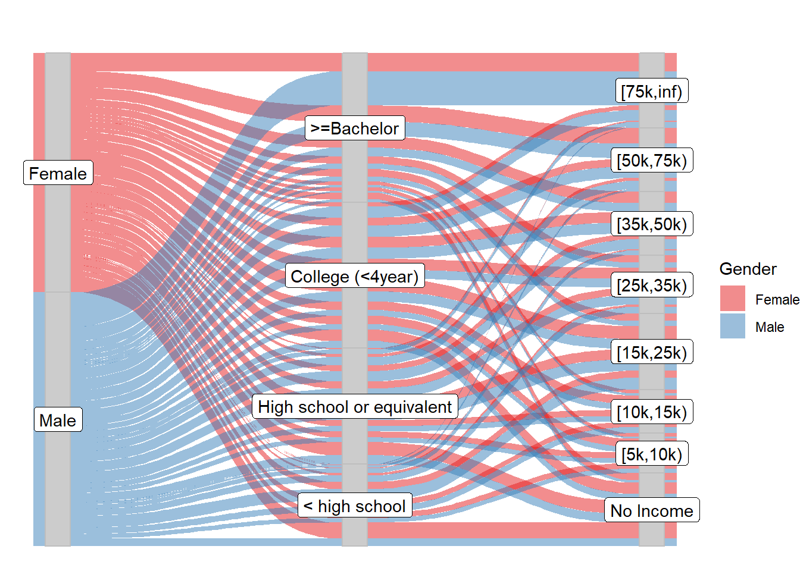
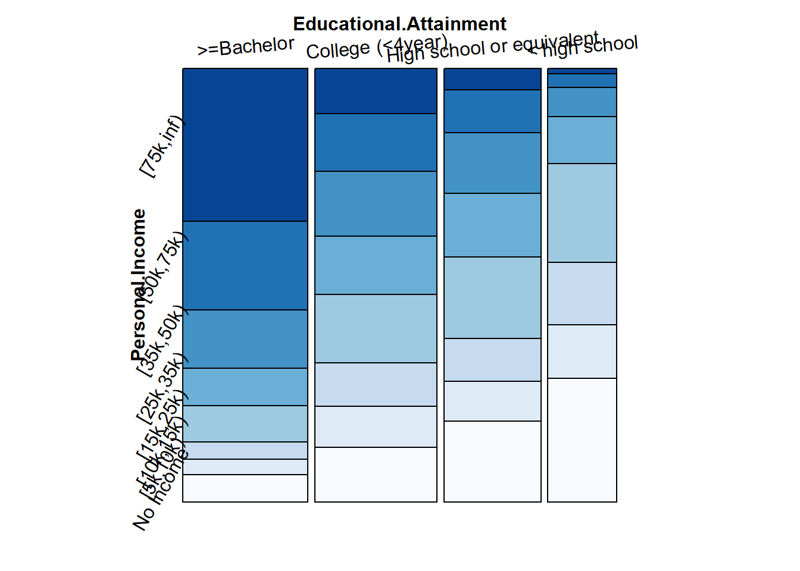
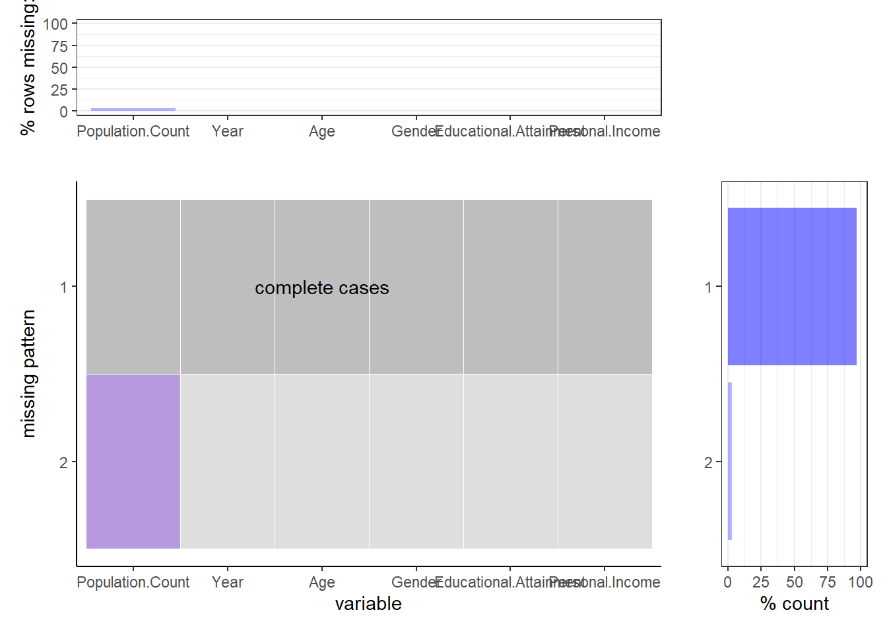
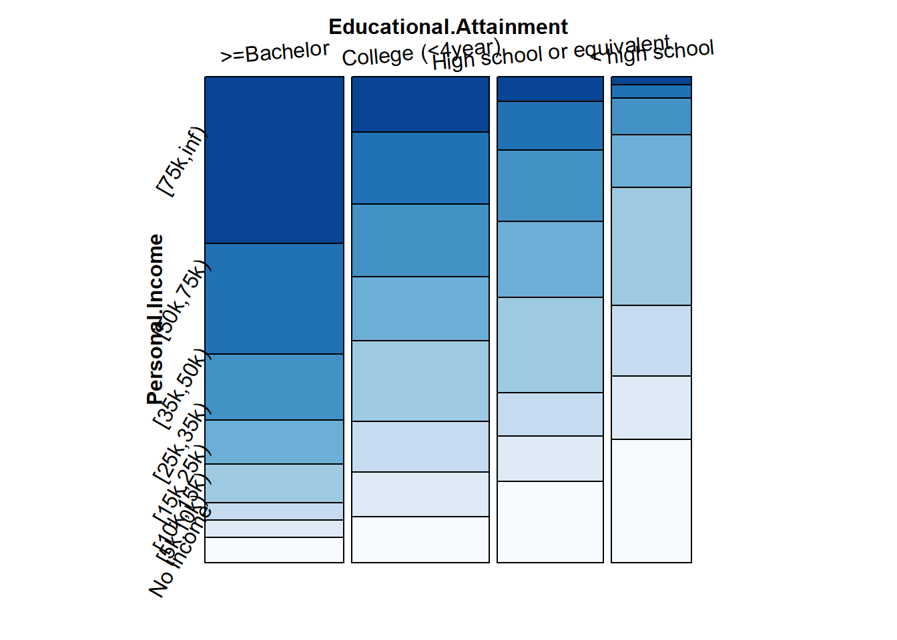

Chapter 4 Missing values
There are some missing values in our dataframe, we want to look into the missing values and see if there is any pattern.
Firstly, we want to know how many of our rows contain missing values.

We can see that the only column that is missing is the Population.Count. Only 34 rows have missing values. But does the missing value has any pattern? Is the missing value related to any other variables?

From the plots above, we cannot see patterns of the missing values with respect to Year or gender. However, We can see that the majority of the missing values are for people from 0 to 17 years old. Only 1 row for people aged over 65 is missing, and none of the rows for people between 18 and 64 is missing. So we are not surprised to see that the majority of the missing information are for people with no income and classified as “Children under 15”.
Then, we want to find what percent of rows are missing for each age group:

We can see that a large proportion of data for residents aged 0 to 17 are missing. Very small percent of data is missing for 65 and older. No data is missing for people aged between 18 and 64.
Finally, we use the combined plot to show the patterns:

The results agree with our plots made before: Only Population.Count column is missing, and the majority of the rows in our dataset does not contain any missing values.
In conclusion, the only column that contains missing values is Population.Count. A large proportion of data are missing for people aged 17 years old or younger. In addition, it doesn’t make much sense to analyze income for people aged below 18. Therefore, our project will mainly focus on the data for people aged between 18 and 64.